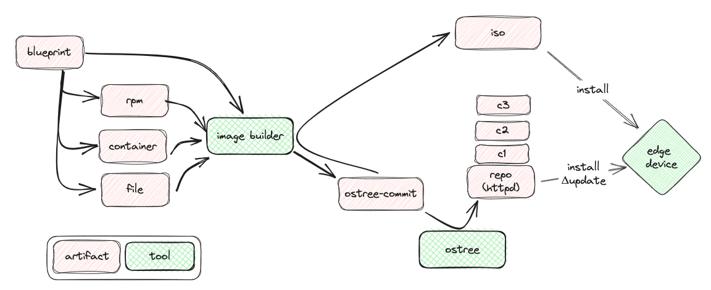

Design, Build, and Publish Edge Images
Estimated reading time: 5 minutes.
- Objective
-
Understand the generic characteristics of RHEL for Edge images and the workflows for building and publishing them.
| Work In Progress |
[ This needs to work as an intro to the whole process of building and publishing edge images]
Provision and Update Edge Devices with Image Builder and RPM-OSTree
The Image Builder service is the main tool to create RHEL for Edge system images, which it calls edge images. There are multiple ways of using those images to provision and update edge devices, and the following figure gives an overview of the general workflow:

Image Builder takes as input a blueprint, which describes the operating system and application components to include in the system image, such as RPM packages from RHEL, RHEL packages from third-party DNF repositories, and container images.
Image Builder and outputs a system image which, in the case of an edge system image, is an OSTree commit produced by RPM-OSTree.
You can use the OSTree commit as-is, and copy (or push) the OSTree commit to a remote OSTree repository in a standard web server. Then the standard RHEL instaler, with a custom kickstart file, can download and deploy the OSTree commit into an edge device.
Alternatively, you can instruct Image Builder to embed the OSTree commit into a bootable image, producing a custom installation image which is self-sufficient to boot and install an edge device without access to a remote web server.
The same custom installation media could be used with a standard network boot server, maybe a server that is local to an edge site.
Regardless of how an edge device was initially provisioned, edge device updates must follow the same workflow: the device downloads a new OSTree commit from a remote web server. You must copy (or push) the new image, from Image Builder, to that web server, so that edge devices can fetch the new image and update themselves.
The RHEL Image Builder Service
The Image Builder runs as a system service in RHEL, named osbuild-composer, with which you interact by means of the composer-cli command-line client or the Composer Cockpit module. It can generate various types of system images, including edge images.
Image Builder needs elevated system privileges to manipulate SELinux labels and other attributes in files that belong to a system image, but unprivileged users can interact with it safely using one of its clients. That means, you don’t need a root password or sudo privilege to build sustem images with the Image Builder service. You only need file system access to its UNIX socket file, which is allowed to the weldr group.
Unlike other similar services, such as the Docker daemon, Image Builder has a limited scope of operations, which ensures that access to the Image Builder service does not allow its users to perform privileged operations. Access to Image Builder does not make a user a "root equivalent" and does not create any significant security risks.
The biggest benefit of using Image Builder, compared to generic Anaconda or Ansible automation, is the built-in knowledge about the needs of multiple target platforms such as cloud providers and hypevisors. It ensures your image contains all recommended settings and system services for working well on each platform.
Depending on the target environment and the type of image, you can use different methods to perform additional installation-time (or day-1) customization of those images, for device or site-specific configuration. Anaconda Kickstart, cloud-init, and CoreOS ignition are among the suported alternatives. Or you could build your own workflow for adding local customizations to an image, for example by using an interactive application which runs during the first boot.
Cloud customizations and edge customizations are not exclusive: Image Builder can generate an edge image, which is an image-based system, for a cloud edge platform, such as AWS Outposts. That image will use the cloud service formats, for example AWS AMI, and support cloud provider agents, such as AWS System Manager, and also cloud provider configuration services, for example cloud-init for AWS.
Image Builder Clients
There are three ways of interacting with the Image Builder service:
-
Using its command-line client, the
composer-clicommand. -
Using the web UI of the Composer Cockpit module.
-
Using the osbuild Ansible collection.
[ Move to here here the constrains on same OS release and advice of running in a VM ]
Edge Device Updates with RPM-OSTree
We already learned that the Image Builder service uses RPM-OSTree to build edge system images from RPM packages. We also learned that an edge system image is an OSTree commit, which can be stored on the edge device itself, on bootable media, and also on OSTree repositories in remote web servers.
Edge devices use RPM-OSTree to download system image updates, as new OSTree commits, and deploy them as the active system image for the next boot. You either log in manually on each edge device to command RPM-OSTree to fetch and deploy updates or you update that process using Ansible.
As you would expect, all edge system images produced by Image Builder are hardcoded to include the RPM-OSTree tooling, so that edge devices can be updated.
Once you build a new system image with the Image Builder service, you must publish the new image, that is, the new OSTree commit, on a remote OSTree repository, so that edge devices can fetch it. You either use OSTree repository management commands to copy (or push) the OSTree commit, or you automate that process publishing edge images using Ansible.
Your devopment system, which you use to build and test edge system images with RHEL for Edge, must include the OSTree tooling, so you can publish images and updates to remote OSTree repositories, in addition to the Image Builder service and its clients.
Once you automate provision and updates of edge devices using Ansible, it makes sense to also update edge image creation using Ansible, so that you have an end-to-end, automated process, for building and deploying edge system images. Ideally, you would integrate that automation with the CI/CD system that builds applications you run on your edge devices.
Next Steps
Now that you was introduced to the essential concepts of RHEL for Edge, a series of hands-on activties install and configure Image Builder in a development system, which you use to build simple edge images. Later in this course you will publish those images in a web server, test those edge images using local VMs, and them update those VMs to use newer system images.